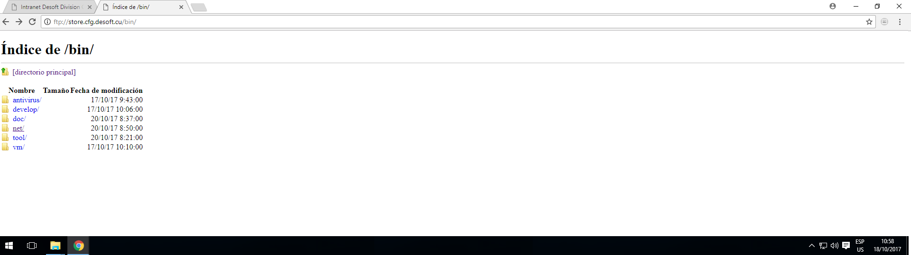
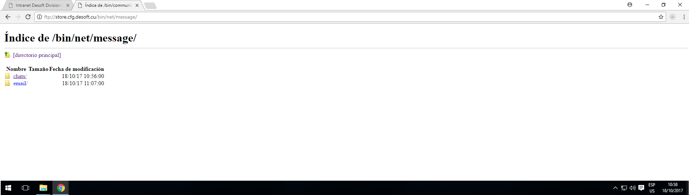
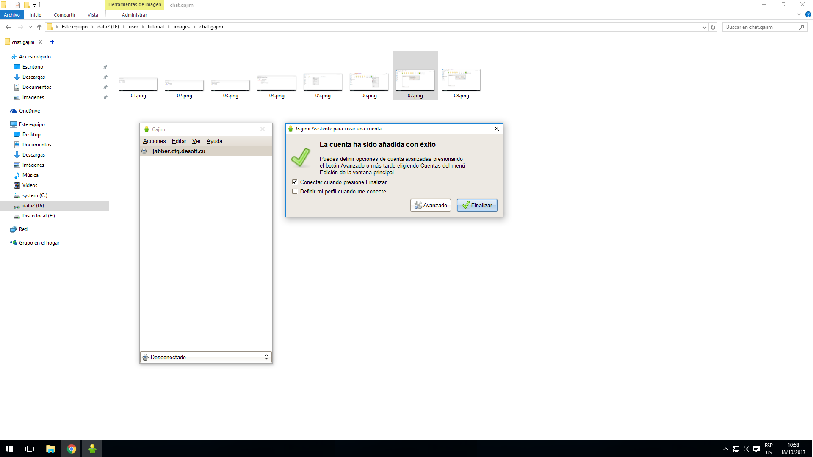
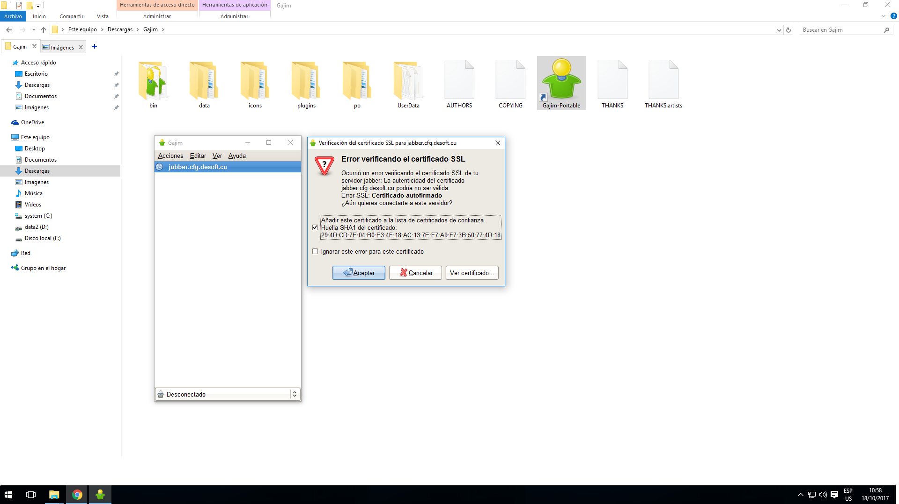
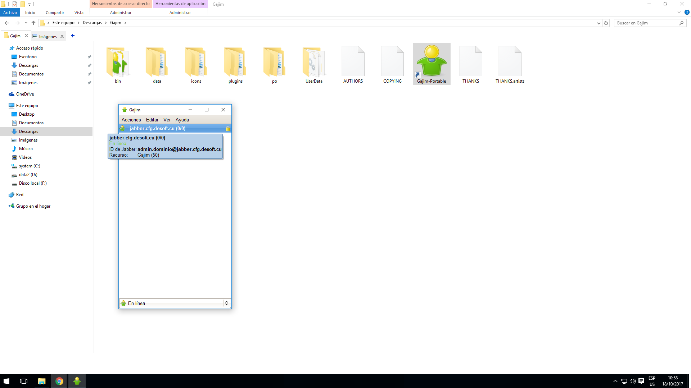
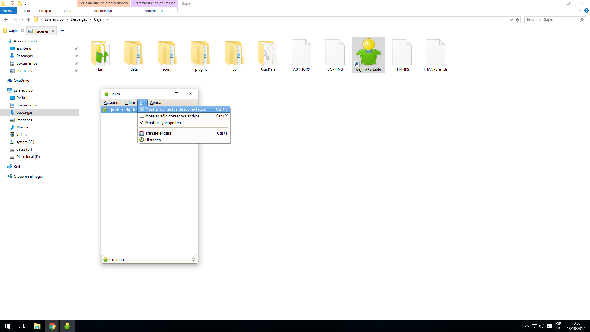
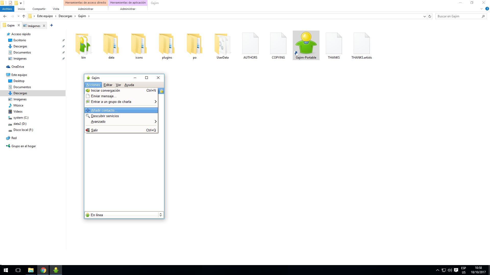
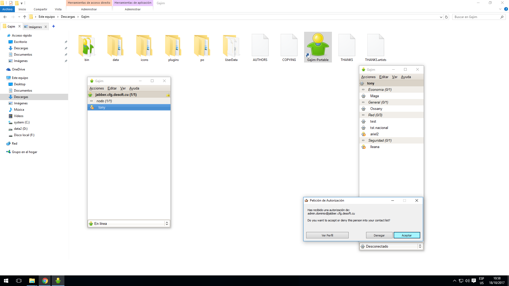
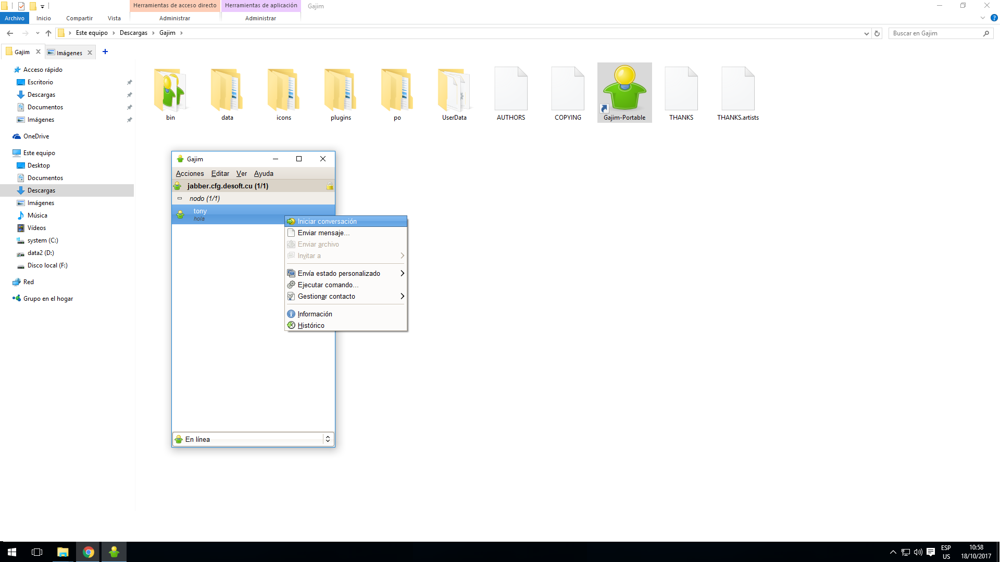

-

Este tutorial les describe paso a paso las configuraciones necesarias para poder vía chat a través del cliente Gajim.
Para obtener la aplicación cliente o software Gajim debemos descargarlo desde el Almacén de la nube. Para ello accedemos a través de un navegador web escribiendo su dirección ftp://store.cfg.labiofam.cu o presionando clic izquierdo sobre el enlace que aparece en la intranet.
Una vez dentro del almacén deben dar clic izquierdo en la carpeta denominada [bin] que es donde se encuentran todos los binario o software de forma general. También pueden acceder directamente a través de este enlace Gajim_installer
-

Una vez dentro del directorio [bin] deben acceder al directorio [net] que es donde se encuentran alojados los softwares dedicados a las redes de forma general.
-

Una vez dentro del directorio [net] deben acceder al directorio [message] que es donde se encuentran alojados los softwares para la comunicación o mensajería.
-

Una vez dentro del directorio [message] deben acceder al directorio [chats] que es donde se encuentran alojados los softwares para la comunicación o mensajería en forma de texto.
-

Una vez dentro del directorio [chats] debemos descargar el software Gajim, en este caso descargaremos el que esta compactado de extensión zip. Para ello podemos dar clic derecho sobre el enlace y marcar la opción [Guardar enlace como] o simplemente dar clic izquierdo.
-

Una vez descargado nuestro cliente, debemos descomprimirlo para poder utilizarlo posteriormente. Para ello se debe dar clic derecho sobre el archivo de extensión .zip y presionar con el clic izquierdo sobre la opción extraer aquí.
Nótese que en este ejemplo el software Gajim se almaceno en el directorio descargas de la cuenta de usuario, pero no necesariamente tiene porque dejarse en este directorio, esta aplicación es portable y funciona perfectamente independiente del directorio en que se encuentre, sin requerir instalación.
-

Una vez descomprimido nuestro cliente chat entramos en el directorio que nos crea y ejecutamos la aplicación denominada [Gajim-Portable] la cual se identifica por un icono en forma de hombrecito. Para ejecutarlo basta con seleccionarlo y presionar la tecla [Enter] de nuestro teclado, o doble clic izquierdo sobre el icono, o simplemente clic derecho y presionar la opción [Abrir] tal y como se muestra en pantalla.
-

Al ejecutarlo, por ser la primera vez que lo hacemos nos muestra un asistente para crearnos nuestra cuenta de acceso.
Para ello debemos seleccionar el radiobottom denominado [Ya tengo una cuenta y quiero usarla] y presionar el botón denominado [Adelante]
-

A continuación, debemos especificar los datos de nuestra cuenta de usuario la cual es la misma del dominio y nos da acceso a todos los servicios internos de la división (Sesión en la PC, Correo, Chat, etc).
Nótese como es necesario especificar bien el nombre del servidor de chat de la división, denominado jabber.cfg.labiofam.cu, recuerde presionar el botón [Adelante] para continuar.
-

Una vez concluido este proceso nos muestra un cuadro de dialogo donde se nos notifica que nuestra cuenta ha sido añadida con éxito, solo falta establecer conexión para probar su funcionamiento, para ello demos clic izquierdo sobre el botón [Finalizar].
-

Al intentar establecer conexión por primera ocasión no muestra un cuadro de dialogo donde nos cuestiona sobre si queremos aceptar o no el certificado de seguridad. Seleccione el primer checkbox o recuadro de chequeo, donde especificamos que almacenaremos el certificado y presionemos el botón [Aceptar]
-

Como bien podemos observar nuestra cuenta está configurada y nos encontramos en línea, sin embargo, no nos aparecen ningún contacto. Esto se debe a dos razones fundamentales:
1- No tenemos ningún contacto adicionado a nuestra cuenta, similar al funcionamiento del Facebook.
2- No tenemos ningún contacto en línea.
En el caso de aquellos usuarios que se conectan mediante un cliente previamente configurado y tenían contactos adicionados en el pasado, les deben aparecer en su lista de amigos. Sin embargo, al reinstalarse el servidor esa información se perdió, por tanto, deben asegurarse de adicionar nuevamente estos usuarios a su lista de contacto.
-

Para descartar que tengamos o no usuarios añadidos a nuestra cuenta, pues así podemos tener una mejor idea de lo que sucede, debemos acceder a la opción [Ver] del menú y desde ahí marcar la opción [Mostrar los contactos desconectados]
-

Si necesitamos comunicarnos con algún contacto que no esté incluido en nuestra lista de amigos, el procedimiento siempre es el mismo. Debemos ir al menú y presionar la opción [Acciones], ahí seleccionamos [Añadir contacto …]
-

La cual nos muestra una pantalla donde debemos especificar los datos de la persona que deseamos adicionar a nuestra lista de amigos.
Nótese la importancia de escribir bien el identificador de la cuenta de la persona y en caso de que pertenezca a nuestra división siembre el usuario debe tener nuestro dominio @jabber.cfg.labiofam.cu, si la persona perteneciese a otro lugar entonces se deberá especificar la particularidad de su dirección.
Por otra parte, el campo [Alias] define el nombre con que identificaremos al contacto en nuestra lista de amigos y el grupo es un aspecto organizativo a gusto de cada cual que nos facilitara la búsqueda de los usuarios.
-

En este ejemplo adicionamos a nuestra lista de contacto el usuario denominado [Tony] dentro del grupo [nodo], sin embargo, nos aparece con un símbolo de interrogación. Esto se debe a que la otra persona debe aceptar nuestra suscripción de amistad para que podamos establecer una comunicación.
-

En esta pantalla podemos observar otro cliente de chat conectado con la cuenta de [Tony] que recibe una suscripción de amistad. Este sería el procedimiento en caso de que alguien nos agrega a su lista de contactos.
Como bien se puede observar el mensaje de notificación de petición de autorización puede ser denegado o autorizado. En este caso se presiona el botón [Aceptar]
-

Una vez que aceptan nuestra solicitud de amistad, se nos notifica mostrándose automáticamente el estado del usuario el cual puede estar (En línea, Ocupado, Ausente, Desconectado)
-

Si deseamos iniciar una conversación basta con presionar doble clic izquierdo sobre el contacto o clic derecho y accionar sobre la opción [Iniciar conversación]
-

De esta forma saldría una ventana flotante donde podemos enviar y recibir mensajes de texto, para ello escribimos el mensaje deseado en la casilla inferior (en este ejemplo se escribió ok) y luego se presiona la tecla [Enter] de nuestro teclado o se da clic izquierdo sobre el botón [Enviar]
-

En caso que se desee conectar al servidor a través de otro cliente de chat (Psi, Pandion, Pidgin, etc) deben especificar el nombre del servidor jabber.cfg.labiofam.cu y el puerto 5222, el cual viene por defecto en la mayoría de estos productos, tal y como se muestra en pantalla. Aunque en este caso se muestra deshabilitado u opaco porque se está utilizando los valores por defectos, pero perfectamente se pueden cambiar.